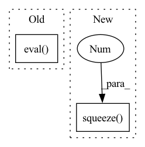

Pattern ID :26737

Before Change
trainset = ImageTextDataset(X, y, transform)
trainloader = torch.utils.data.DataLoader(trainset, shuffle = True, batch_size = args.batch_size)
resnet50 = models.resnet50(pretrained = True).to(device).eval()
bert = BertModel.from_pretrained("bert-base-uncased").to(device).eval()
model = Towers(len(np.unique(y))).to(device)
opt = RMSprop(model.parameters(), lr = args.lr, momentum = 0.9)
After Change
imgs = imgs.to(device)
labels = labels.to(device)
img_embeddings = resnet50(imgs).to(device).squeeze(2).squeeze(2)
text_embeddings = torch.stack([get_encoding(text, bert, device) for text in texts]).to(device)
opt.zero_grad()
outputs, imgs_f, texts_f = model(img_embeddings, text_embeddings)
In pattern: SUPERPATTERN
Frequency: 4
Non-data size: 2
Instances
Fragment ID: 79922643
Project Name: amanjain1397/huse
Commit Name: 5937721f1f9b59fcfb5f1ce0e3a34797a83e9302
Time: 2020-06-11
Author: amanjain1397@gmail.com
File Name: main.py
M Class Name: AnonimousClass
N Class Name: AnonimousClass
M Method Name: train(1)
N Method Name: train(1)
M Parent Class:
N Parent Class:
M File Name: main.py
N File Name: main.py
M Start Line: 76
M End Line: 109
N Start Line: 76
N End Line: 117
'>
Before Change
_, sr = sf.read(path_list[0])
if speaker_embedding:
wav2mel = torch.jit.load("Models/SpeakerEmbedding/wav2mel.pt")
dvector = torch.jit.load("Models/SpeakerEmbedding/dvector-step250000.pt").eval()
ap = AudioPreprocessor(input_sr=sr, output_sr=16000, melspec_buckets=80, hop_length=256, n_fft=1024, cut_silence=cut_silences)
for path in tqdm(path_list):
transcript = self.path_to_transcript_dict[path]
wave, sr = sf.read(path)
After Change
cached_speech = ap.audio_to_mel_spec_tensor(audio=norm_wave, normalize=False).transpose(0, 1).cpu().numpy()
cached_speech_len = torch.LongTensor([len(cached_speech)]).numpy()
if speaker_embedding:
cached_speaker_embedding = speaker_embedding_function.encode_batch(norm_wave).squeeze(0).squeeze(0).detach().cpu().numpy()
process_internal_dataset_chunk.append([cached_text,
cached_text_len,
cached_speech,
'>
Fragment ID: 79922642
Project Name: digitalphonetics/ims-toucan
Commit Name: 4705928bf2e8184d5b2bb1ef9dcc7213e398026d
Time: 2021-09-13
Author: florian.lux@ims.uni-stuttgart.de
File Name: TrainingInterfaces/Text_to_Spectrogram/Tacotron2/TacotronDataset.py
M Class Name: TacotronDataset
N Class Name: TacotronDataset
M Method Name: cache_builder_process(7)
N Method Name: cache_builder_process(7)
M Parent Class: Dataset
N Parent Class: Dataset
M File Name: TrainingInterfaces/Text_to_Spectrogram/Tacotron2/TacotronDataset.py
N File Name: TrainingInterfaces/Text_to_Spectrogram/Tacotron2/TacotronDataset.py
M Start Line: 83
M End Line: 98
N Start Line: 83
N End Line: 96
'>
Before Change
valset = ImageTextDataset(X, y, transform)
valloader = torch.utils.data.DataLoader(valset, shuffle = False, batch_size = 1)
resnet50 = models.resnet50(pretrained = True).to(device).eval()
bert = BertModel.from_pretrained("bert-base-uncased").to(device).eval()
model = Towers().to(device).eval()
model.load_state_dict(torch.load(args.model))
After Change
img = img.to(device)
label = label.to(device)
img_embeddings = resnet50(img).to(device).squeeze(2).squeeze(2)
text_embeddings = torch.stack([get_encoding(text, bert, device) for text in text]).to(device)
pred, img_f, text_f = model(img_embeddings, text_embeddings)
'>
Fragment ID: 79922640
Project Name: amanjain1397/huse
Commit Name: 5937721f1f9b59fcfb5f1ce0e3a34797a83e9302
Time: 2020-06-11
Author: amanjain1397@gmail.com
File Name: main.py
M Class Name: AnonimousClass
N Class Name: AnonimousClass
M Method Name: evaluate(1)
N Method Name: evaluate(1)
M Parent Class:
N Parent Class:
M File Name: main.py
N File Name: main.py
M Start Line: 151
M End Line: 180
N Start Line: 159
N End Line: 190
'>
Before Change
_, sr = sf.read(path_list[0])
if speaker_embedding:
wav2mel = torch.jit.load("Models/SpeakerEmbedding/wav2mel.pt")
dvector = torch.jit.load("Models/SpeakerEmbedding/dvector-step250000.pt").eval()
ap = AudioPreprocessor(input_sr=sr,
output_sr=16000,
melspec_buckets=80,
hop_length=256,
After Change
if np.count_nonzero(cached_duration.numpy() == 0) > 4:
continue
else:
cached_speaker_embedding = speaker_embedding_function.encode_batch(norm_wave).squeeze(0).squeeze(0)
attention_map = acoustic_model.inference(text_tensor=text.squeeze(0).to(device),
speech_tensor=melspec.to(device),
use_teacher_forcing=True,
speaker_embeddings=cached_speaker_embedding.to(device),
'>
Fragment ID: 79922644
Project Name: digitalphonetics/ims-toucan
Commit Name: 4705928bf2e8184d5b2bb1ef9dcc7213e398026d
Time: 2021-09-13
Author: florian.lux@ims.uni-stuttgart.de
File Name: TrainingInterfaces/Text_to_Spectrogram/FastSpeech2/FastSpeechDataset.py
M Class Name: FastSpeechDataset
N Class Name: FastSpeechDataset
M Method Name: cache_builder_process(11)
N Method Name: cache_builder_process(11)
M Parent Class: Dataset
N Parent Class: Dataset
M File Name: TrainingInterfaces/Text_to_Spectrogram/FastSpeech2/FastSpeechDataset.py
N File Name: TrainingInterfaces/Text_to_Spectrogram/FastSpeech2/FastSpeechDataset.py
M Start Line: 115
M End Line: 156
N Start Line: 115
N End Line: 153